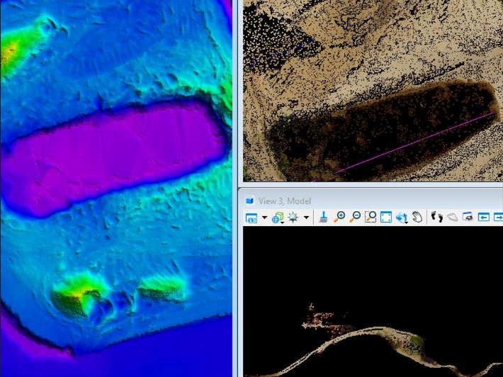

Python Modules
Network
Python module for building and analyse geographic network.
Data Processing
Whether the data is structured, images, point cloud, using data analysis and machine learning techniques to generate new information and create insight from it.
- Data Exploration (EDA)
- Data Cleaning
- Data Wranggling
- Topographic Data Processing
- Point Cloud Processing

Geodata Analysis
Whether the data is structured, images, point cloud, using data analysis and machine learning techniques to generate new information and create insight from it.
- Vector Analysis
- Raster Analysis
- Network Analysis
- Machine Learning

Data Visualization
"A picture is worth a thousand words". Information shown in charts and maps is more easily procesed, letting you make a better understanding of it.
- Reports
- Infographics
- Technical Drawing
- WebMaps apps design
- Dashboards